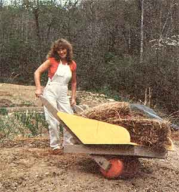
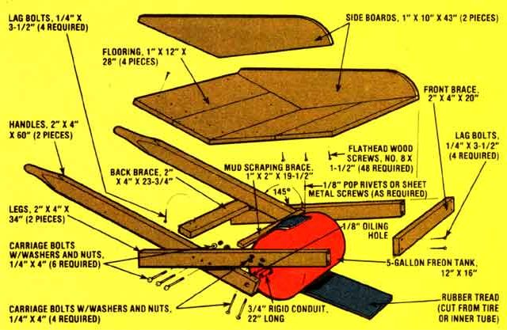

The cost of gardening equipment-and of most other useful commodities, as well -is skyrocketing. So-to help you save a little cash (as much as $65!) on your hardware expenses - MOTHER's researchers have come up with an unusual and functional build it-yourself wheelbarrow!
MOTHER's load-lifter rolls on a recycled five-gallon Freon cylinder (available for the asking at your local refrigeration and air conditioning shop), which is-in turn supported on a 3/4" X 22" length of rigid conduit that serves as an axle. The wide footprint of that tank "wheel" is one secret of this humus-hauler's success. Few conventional wheelbarrows can cruise over holes as easily as this build-it yourself tool, and no other single-wheel design is as stable. (After all, how many store-bought 'barrows sport wheels more than half the width of their load beds?)
In addition, our easy-to-make garden helper balances its load above the wheel - for ease of lifting-in a box constructed from 10 feet of 1 X 12 (for flooring) and an eight-foot length of 1 X 10 (which is used for side boards). The little workhorse's triangulated design provides the 2 X 4 frame (you'll need two 10-foot lengths, all told) with added strength under load. And best of all-you can put together MOTHER's wheelbarrow in a couple of hours for under $10 (or even less, if you "recycle" materials).
MOTHER's mover can be assembled using basic carpentry tools, with a few exceptions: In order to turn the Freon tank into a wheel, you must drill (using a metal working bit) a 3/4" hole in each end of the cylinder . . . and then weld the 3/4" X 22" conduit axle in position.
Also, you should cover the tank with something cushy to help it ride over concrete or rocks. Try stretching a "sleeve" or two of old truck inner tube over the cylinder . . . with a little lubricating help from some oil. Or slice up a chunk of used-tire tread and pop rivet (or screw) it to the roller.
Once the wheel is assembled, it's time to construct the wooden frame and load bed. Divide one of the 2 X 4's into two 60" pieces to form the handles. Since these "hilts" will angle outward from the axle ends (to provide a comfortable "grasp"), the holes which will secure the "wheel" in place will not be perpendicular to the wood surface. So turn the boards sideways and raise the grab-ends of the handles with 5" blocks . . . you can then drill square to your work surface-at a point centered on and three inches from the end of the board-to get the correct angle.
When you have a heavy load on board, however, there is a danger that the pressure (which will focus at the axle holes) may split the 2 X 4's. To prevent that disaster, brace the wood with two carriage bolts that pass through a pair of 1/4" bores on each side of the axle . . . and use large washers and nuts to provide maximum support for this critical connection. You should also drill an oil inlet into each axle hole from above . . . periodic lubrication-at the holes-will keep the conduit happily slipping in its wooden "bushings".
Next, bore the 1/4" center carriage bolt hole for each handle-to-leg mount. These openings should be about nine inches from the axle ... but the distances on both handles must be equal, as any significant difference will cause the frame to scissor unevenly. After the handles are ready, slide each one onto its appropriate axle and brace them with a 1" X 2" X 19-1/2" crosspiece nailed (about one inch behind the wheel) atop the handles.
(The 1" X 2" brace was initially used by MOTHER's research staff simply for rigidity during construction . . . but eventually became an integral part of the design: the mud scraper.)
Now fetch your other length of 2 X 4 and saw off two 34" portions ... which will become the wheelbarrow's legs. Because these stanchions bolt to the outside of the handles, you'll have to drill a 1/4" hole at a point 23 inches from the end of each 34" piece. Then, bolt the legs and handles loosely together. Since the remaining four carriage bolts have not yet been inserted, the angle of intersection between the portions of the frame remains adjustable.
From the remaining chunk of 2 X 4, lop off two more sections-one 20" and one 23-3/4" to use as front and rear braces. Slide the 23-3/4" board between the legs and handles from behind . . . until the upper angle formed by the two major components is 145°. Mark the position, and remove the brace. Then pick up your drill again and bore four holes to start the lag bolts which secure this support. (The hole in each brace must be 1/4" in diameter, while the handle bores should be slightly smaller.) Use the same bits to prepare the front (20") strut and the legs for their lag bolts. When all the assorted handles, legs, and braces are in position, drill the remaining four carriage bolt holes (roughly two inches to each side of the original pivot mount holes) . . . and cinch the frame together.
Now, you're ready to install flooring and side boards. First, saw four 28" lengths from the 1 X 12 and tack them into position along the handles and legs. Drill and countersink holes for the No. 8 X 1-1/2" wood screws (using a 3/32" bit) which will secure the planks in place. Once the bed is attached, cut the 1 X 10 to make two 43" pieces, hold one in position, and scribe the side board profile you need. Then, tack the two boards together and cut them as one. Drill and countersink holes for the remaining 24 wood screws, and fasten the sides to the assembly.
Finally, pull out your nastiest rasp file and work the handle grips down until your mitts get a comfortable fistful of timber. Add a coat of paint and you're ready to do some totin'.
Pitch on a load that would have left your conventional carrier belly up and busted ... and take her for a spin. MOTHER thinks you'll be amazed how much you can haul with nary a whimper-from you or the wheelbarrow.
|
 |
 |
|